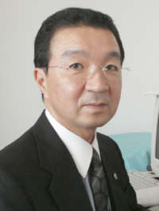

＜記帳指導＞
原則、毎月1回訪問し、記帳指導をさせて頂きます。会計ソフトの導入を検討しておられる場合には、選定から操作指導に至るまで丁寧にアドバイスさせて頂きます。
会計業務・税務申告だけが税理士業務では有りません。会社発展の全てをサポートし、経営者の皆様の悩みを解決する村本秀夫税理士事務所のHPへようこそ！
薬剤師から税理士へ。異色の経歴を持つ所長が、中小企業や個人事業主の皆様の幸せを願い、会計と経営の両面から誠実にサポートいたします。

私は薬剤師でありながら税理士という異色の経歴をもっています。薬剤師がなぜ税理士になったのか、自分でも不思議なめぐり合わせだと思います。
しかし今の税理士という職業には格別の愛着があります。中小企業や個人事業は常に危険と隣り合わせです。
その経営者や従事されている方たちの幸せを願いつつ、微力ながら支援できる仕事は自分の幸せだと思います。
事務所の経営理念について
自分が幸せになりたい。これが私の願いです。でも幸せは自分でつかむものではなく、周りの方に与えていただくものだと思っています。周りの方々に幸せになっていただくこと、これが私の幸せへの道だと信じて毎日を送っています。
「自利利他」の理念の実践とは
ＴＫＣ全国会の基本理念である「自利利他」について、ＴＫＣ全国会創設者飯塚毅は次のように述べています。
大乗仏教の経論には「自利利他」の語が実に頻繁に登場する。解釈にも諸説がある。その中で私は「自利とは利他をいう」（最澄伝教大師伝）と解するのが最も正しいと信ずる。
仏教哲学の精髄は「相即の論理」である。般若心経は「色即是空」と説くが、それは「色」を滅して「空」に至るのではなく、「色そのままに空」であるという真理を表現している。
同様に「自利とは利他をいう」とは、「利他」のまっただ中で「自利」を覚知すること、すなわち「自利即利他」の意味である。他の説のごとく「自利と、利他と」といった並列の関係ではない。
そう解すれば自利の「自」は、単に想念としての自己を指すものではないことが分かるだろう。それは己の主体、すなわち主人公である。
また、利他の「他」もただ他者の意ではない。己の五体はもちろん、眼耳鼻舌身意の「意」さえ含む一切の客体をいう。
世のため人のため、つまり会計人なら、職員や関与先、社会のために精進努力の生活に徹すること、それがそのまま自利すなわち本当の自分の喜びであり幸福なのだ。
そのような心境に立ち至り、かかる本物の人物となって社会と大衆に奉仕することができれば、人は心からの生き甲斐を感じるはずである。
― 飯塚 毅（ＴＫＣ全国会創設者）ＴＫＣ全国会は、租税正義の実現をめざし関与先企業の永続的繁栄に奉仕するわが国最大級の職業会計人集団です。
業務の内容や金額については、お客様のご要望に応じて柔軟にお答えできる体制を整えております。まずは何でも、ご相談ください。
(1) 正しい会計帳簿を作成することは経営の基本です。法令に完全準拠した会計帳簿は、法人税や消費税などの適正な申告に役立つだけでなく、会社の社会的信用を築く大前提となります。
(2) 当事務所は、毎月、貴社を巡回監査し、会計資料や会計記録の適法性と正確性を確保しながら、スピーディーに月次決算を行い、最新の経営成績と財政状態を分かりやすく報告します。
(4) 当事務所は、税務の専門家として、今最もトラブルの多い消費税の問題を解決します。
(5) 国税・地方税の電子申告へ積極的に取り組んでいます。
(6) パソコン会計システム「FX2」で、リアルタイムな全社（部門別）業績管理体制の構築をとおして、「黒字決算」を持続させる経営体質への転換を実現します。
原則、毎月1回訪問し、記帳指導をさせて頂きます。会計ソフトの導入を検討しておられる場合には、選定から操作指導に至るまで丁寧にアドバイスさせて頂きます。
現金出納帳、伝票、給与台帳などの資料をお客様の方で作成していただき、当社で会計ソフトへ入力し、仕訳日記帳、月次試算表、総勘定元帳、貸借対照表、損益計算書などの書類を作成いたします。
当方のスタッフもご一緒させていただき、本来支払うべ き税金以上に請求されることがないよう、また、問題を指摘された場合の調整代行をいたします。
決算指導及び、税務署、都道府県、市町村提出用の各種申告書を作成いたします。
毎月、会計専門家が貴社を訪問し、次の業務を支援します。
経営支援セミナー
名鉄各務原線六軒駅より徒歩3分。お気軽にお越しください。